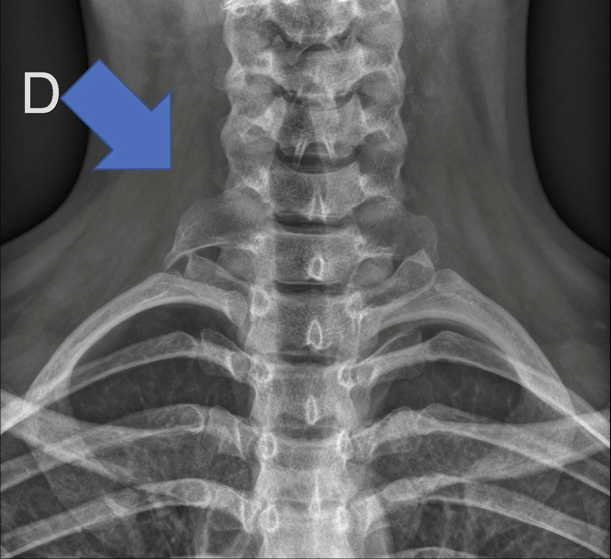
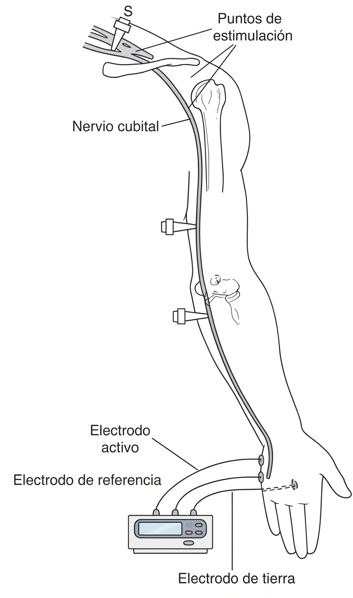
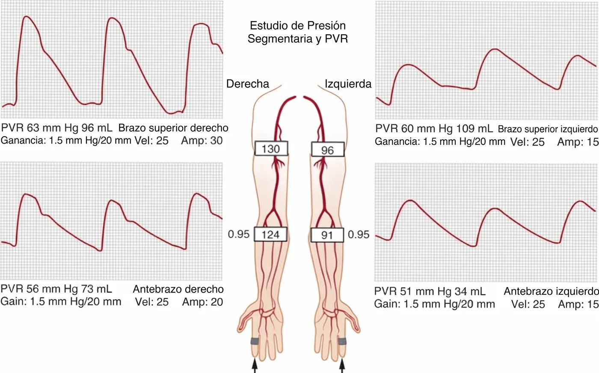
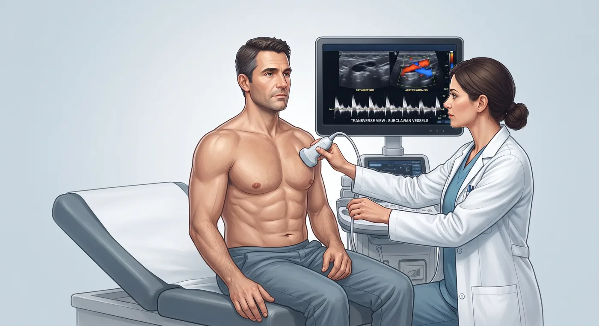
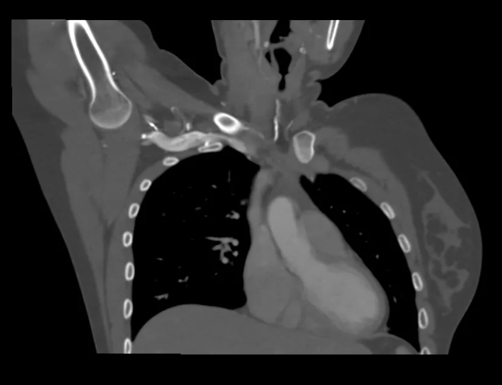

03 · Estudio
Confirmación diagnóstica y planificación del tratamiento
Los exámenes y para qué sirve cada uno
El diagnóstico es clínico. Ningún examen lo confirma por sí solo: el estudio identifica la causa anatómica, define la variante, descarta los diagnósticos diferenciales y —esto es lo que interesa al cirujano— establece si la compresión depende de la primera costilla y los escalenos o de estructuras que exigen otra vía.
Todo SOT

Radiografía de tórax y columna cervical
Costilla cervical, primera costilla anómala, apófisis transversa de C7 elongada, fracturas antiguas de clavícula y callos óseos.
Sospecha neurogénica

Electromiografía y conducción nerviosa
Sirven sobre todo para descartar túnel carpiano, neuropatía cubital y radiculopatía. En el SOT neurogénico verdadero pueden mostrar compromiso del tronco inferior del plexo (nervio cutáneo antebraquial medial, cubital).
Sospecha arterial

Registro de volumen de pulso (PVR)
Pletismografía segmentaria de ambas extremidades, en reposo y con el brazo en abducción: documenta la caída de presión y de la onda de pulso del lado comprimido.
SOT vasculares

Ecografía Doppler / dúplex
Muestra trombos y aneurismas y, de forma dinámica, la oclusión del vaso con el brazo elevado (aumento de la velocidad del flujo arterial, cese del flujo venoso).
Todo SOT · decide la vía

AngioTC o angioRM con maniobras provocativas
Con los brazos en reposo y en abducción. Muestra la compresión dinámica de la arteria o la vena, el sitio exacto y la relación con la costilla y los escalenos. Es el examen que planifica la cirugía.
Solo neurogénico
Bloqueo de escalenos con toxina botulínica
Inyección guiada en el escaleno anterior. Alivio transitorio de los síntomas en una parte de los pacientes; se usa como prueba diagnóstica previa a la cirugía y como puente terapéutico.
Toxina botulínica: qué papel tiene
La inyección de toxina botulínica en los músculos escalenos, y algunas veces también en el pectoral menor, bloquea su estimulación nerviosa (denervación); así logra relajar el músculo y reducir su volumen. El objetivo es aflojar de forma transitoria los músculos que estrechan el opérculo, y se usa principalmente en el síndrome de tipo neurogénico.
Como tratamiento, el alivio es parcial y transitorio. La única revisión sistemática disponible reporta reducción de síntomas en el 46–63 % de las inyecciones primarias, con una duración de uno a seis meses; el único ensayo aleatorizado no mostró diferencia frente a placebo, con una calidad global de evidencia limitada. Sirve como puente durante la terapia física o la espera quirúrgica, mas no como sustituto de la descompresión.
Actualmente su mayor utilidad es anticipar el resultado de la cirugía. El estudio de Donahue demostró que quienes respondieron a la toxina respondieron también a la cirugía en un 99 % de los casos; y una respuesta negativa no descarta la operación: el 86 % de los no respondedores igualmente mejoró en algún grado tras la descompresión.
Puntos clave
- Indicación: principalmente SOT neurogénico.
- Músculos: escaleno anterior; a menudo escaleno medio y pectoral menor.
- Guía: ecografía, con menos complicaciones que la guía por TC.
- Alivio: parcial, en 46–63 %, dura 1–6 meses.
- Respuesta positiva: valor predictivo positivo de 99 % para la respuesta quirúrgica.
- Respuesta negativa: no descarta la cirugía (valor predictivo negativo 14 %).
- Seguridad: sin complicaciones mayores en las series publicadas.
Fuentes
- Kök M, Schropp L, van der Schaaf IC, et al. Systematic Review on Botulinum Toxin Injections as Diagnostic or Therapeutic Tool in Thoracic Outlet Syndrome. Ann Vasc Surg. 2023;96:347-356. doi:10.1016/j.avsg.2023.05.009
- Donahue DM, Godoy IRB, Gupta R, Donahue JA, Torriani M. Sonographically guided botulinum toxin injections in patients with neurogenic thoracic outlet syndrome: correlation with surgical outcomes. Skeletal Radiol. 2020;49:715-722. doi:10.1007/s00256-019-03331-9
- Hussain MA, Aljabri B, Al-Omran M. Vascular Thoracic Outlet Syndrome. Semin Thorac Cardiovasc Surg. 2016;28(1):151-7.
- Cook JR, Thompson RW. Evaluation and Management of Venous Thoracic Outlet Syndrome. Thorac Surg Clin. 2021;31(1):27-44.
- Nguyen LL, Soo Hoo AJ. Evaluation and Management of Arterial Thoracic Outlet Syndrome. Thorac Surg Clin. 2021;31(1):45-54.
Preguntas frecuentes sobre el estudio
¿Qué examen confirma el opérculo torácico?
Ninguno por sí solo: el diagnóstico es clínico. La angioTC o la angioRM con los brazos en reposo y en abducción muestra la compresión dinámica y el sitio exacto, y es el examen que planifica la cirugía. La electromiografía sirve sobre todo para descartar otras neuropatías.
¿Para qué sirve la toxina botulínica en el opérculo torácico?
Se inyectan los músculos escalenos como prueba: si los síntomas se alivian de forma transitoria, apoya el diagnóstico y orienta a la cirugía. Solo se usa en la variante neurogénica y el alivio, cuando ocurre, dura de uno a seis meses.
¿Qué exámenes debo llevar a la consulta?
Radiografía de tórax y columna cervical, angioTC o angioRM con maniobras, electromiografía con conducción nerviosa y, si se sospecha compromiso vascular, ecografía Doppler dinámica.